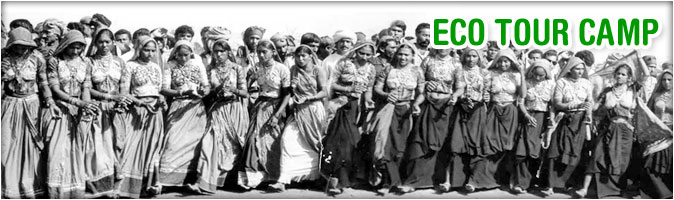
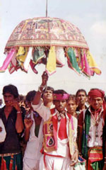
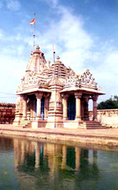
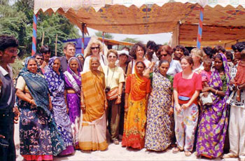
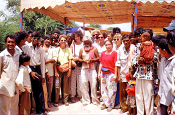

LITTLE RANN OF KUTCH – WILD ASS SANCTUARY
Eco Camp – Jogad (Gujarat) India.
Back To Nature
 Fair and Festival
|  |  |
In October, Navaratri (nine nights) festival begins. It is a social festival. Nine nights’ people of all sections, with out any discrimination of caste, class, sex or age come together and play Rass and Garbi of the “Ambajimataji’s Garbi”. It is found in all the nook and corner of every village and towns of Gujarat.
In October, the Dasera festival and November follow Diwali (festival of lights) and New Year of Hindu calendar.
Special Fair and Festival Offer
Devjibhai Dhamecha family is offering an exclusive and special safari package around the area and fair.
|  |  |


© 2012 - All Rights Reserved to www.littlerann.com Sitemap